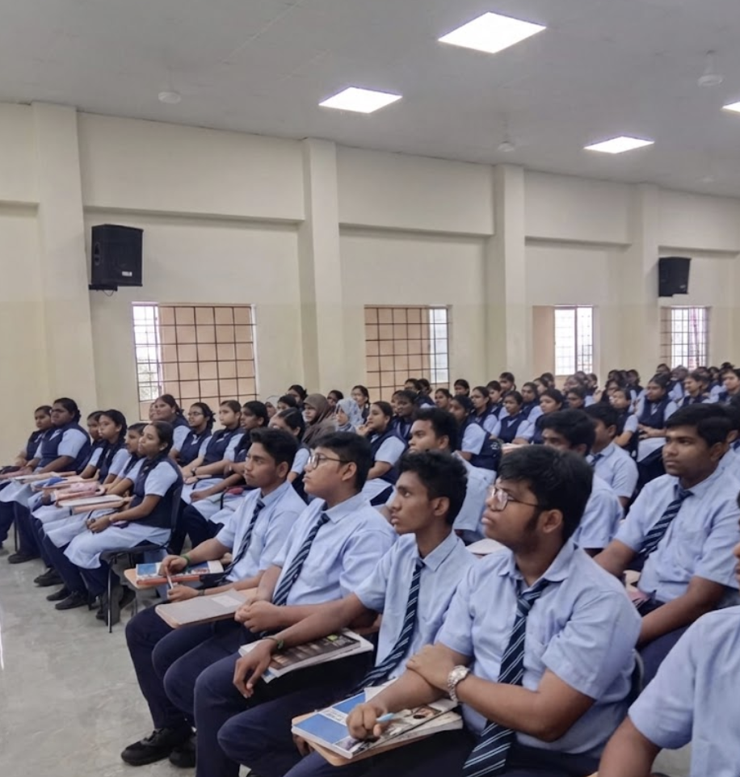
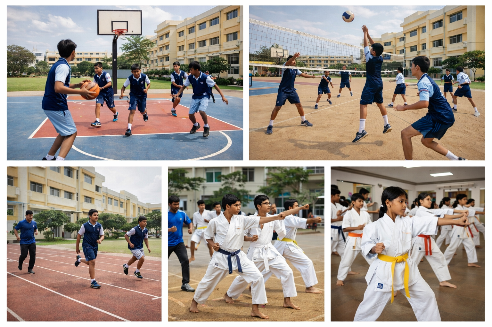
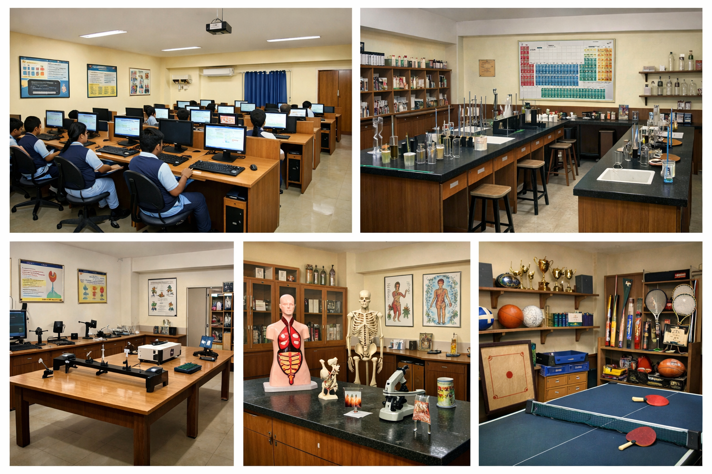

With heartfelt happiness we share our thoughts about the school. The communication channel is open, teachers are polite and go the extra mile to understand concerns from the parents’ side.
Empowering Students Since 1983
Beyond marks. Built for life.
A government-recognised Samacheer board school in Chromepet focused on strong fundamentals, accountability in teaching, and holistic student growth.
1983
Founded
1,800+
Students
150+
Staff



Why St. Mark's?
Four everyday advantages that shape how children learn, feel, and grow here.
Morderate Student - Teacher Ratio
Morderate student–teacher ratios so every child is seen, supported, and stretched at the right pace.
- ✓ More one‑to‑one feedback
- ✓ Stronger teacher–student relationships
- ✓ Space for questions and doubt‑clearing
Safe Environment
A secure, caring campus where discipline and warmth go hand in hand.
- ✓ Monitored campus and corridors
- ✓ Clear rules and respectful culture
- ✓ Supportive teacher and admin team
Experienced Teachers
Committed educators who combine subject expertise with patience, empathy, and accountability.
- ✓ Strong subject knowledge
- ✓ Regular workshops & training
- ✓ Mentoring that goes beyond the classroom
Activity‑Based Learning
Concepts are learnt through projects, experiments, discussions, and real‑life examples—not rote alone.
- ✓ Hands‑on class activities
- ✓ Projects, talent weeks & exhibitions
- ✓ Regular use of labs & AV room
What Makes Us Different !?
Six proof‑points that define how St. Mark’s is structured, how we teach, and how students grow.
01
Clear School Structure
Six departments from KG to XII led by vice principals, so students move smoothly from one stage to the next.
02
Beyond Academics Initiative
Micro‑courses from Class I–VIII in communicative English, GK/current affairs, numerical & logical aptitude, and weekly value education.
03
Teacher Accountability
Workshops at the start of the year plus a five‑point check system to monitor notes, classwork, question papers, and corrections.
04
Labs, Computers & Reading
Science labs, computer education from Class I, coding in middle school, and weekly library sessions for Classes I–VIII.
05
Audio Visual Learning
Dedicated AV room sessions that help students visualise classroom concepts and learn beyond the textbook.
06
Sports & Arts Culture
Regular training from Class III with options like karate, skating, silambham, chess, dance, music, yoga and more.
Quick Links
Jump straight to academics, campus life, admissions, or testimonials.
See the St. Mark's difference in person
A campus visit is the simplest way to understand our learning culture, facilities, and department‑wise support.
What Our Parents Say
Real experiences from the St. Mark's community.
St. Mark's is like no other school I've known. Higher teacher-student ratio, holistic approach, and our child is blossoming into a caring leader and teammate.
I’m very grateful to the teachers and principal. My daughter became a topper thanks to the guidance and consistent support from the faculty.
My kids get ready every morning with so much excitement! The teaching staff are kind, supportive, and truly invested in every child.